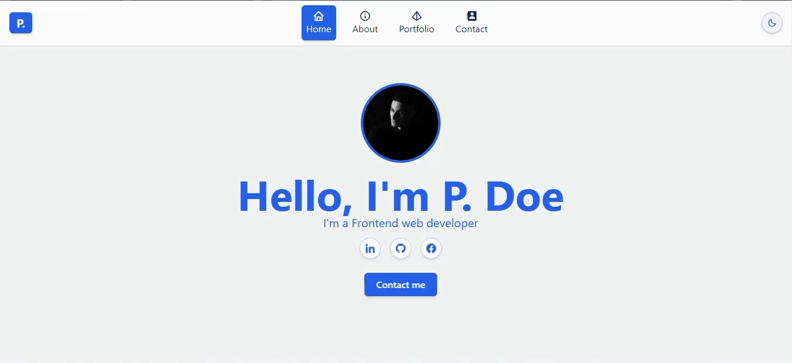

<main>
    <section class="grid gap-6 lg:gap-9 lg:grid-cols-2">
        @for (item of projectLinks; track item.id) {
            <a routerLink="{{item.route}}" class="group">
                <div class=" h-96 bg-slate-400 relative cursor-pointer flex justify-center items-center rounded-3xl p-2 overflow-hidden">
                    
                </div> 
            </a>
        }
        <a routerLink="" class="group">
            <div class=" h-96 bg-orange-400 relative cursor-pointer flex justify-center items-center rounded-3xl p-2 overflow-hidden">
                
            </div> 
        </a>
    </section>
</main>
